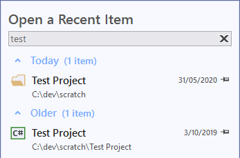
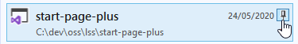
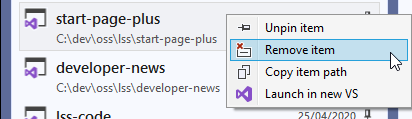
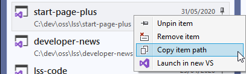
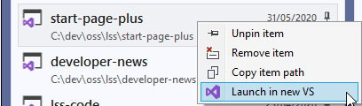
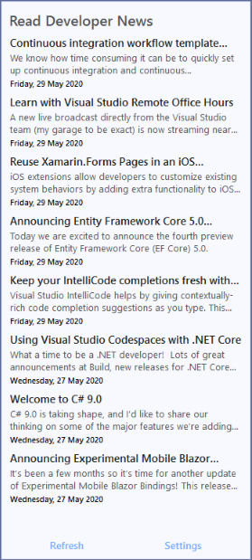
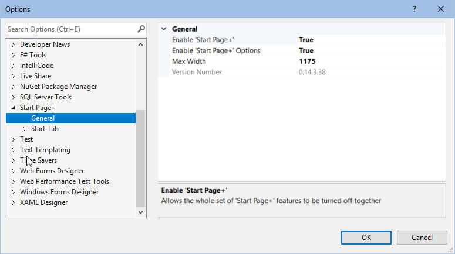
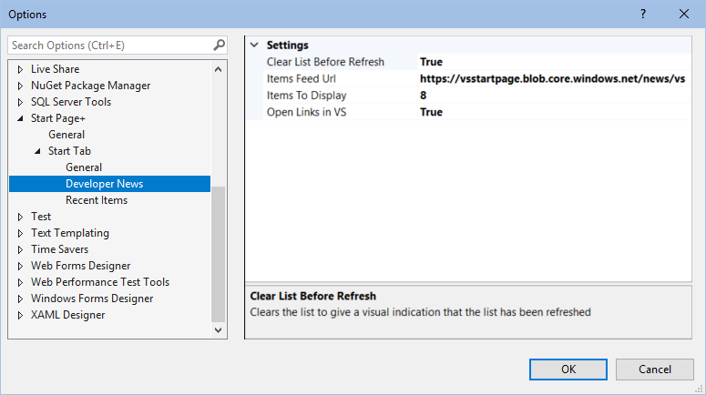

Features
To display the new Start Page+ window:
- click View | Start Page+

Recent Items¶
The Recent Items list brings back the ability to filter the list of recent items, and the grouping by timeframe that we had in VS 2017.

Live Filtering¶
Type a name, or a partial name, into the filter box above the list to display just the matching items as you type.
Click the X in the filter box to start again, or to go back to the full list of items.

Collapsible Timeframes¶
Each timeframe group can be collapsed or expanded by clicking anywhere on the group name. This can come in handy if you want to view items that are currently not being displayed without having to scroll all the way down.

Buttons¶
Pin An Item¶

Unpin An Item¶

Remove An Item¶

Context Menu¶
Right-clicking an item brings up a context menu to give you access to more actions.
Pin/Unpin An Item¶
Right-click an unpinned item in the Recent Items list, and select Pin item in the context menu to pin it. Or click on the icon to the right of the date.
Right-click on a pinned item in the Recent Items list, and select Unpin item in the context menu to unpin it. Or click on the icon to the right of the date.

Remove An Item¶
Right-click any item in the Recent Items list, and select Remove item in the context menu to remove it.

Copy An Item's Path¶
Right-click any item in the Recent Items list, and select Copy item path in the context menu to copy it path to the Windows clipboard. You can then paste it anywhere you need to.

Open Item In VS¶
Right-click any item in the Recent Items list, and select Open in new VS instance in the context menu to copy its path to the Windows clipboard. You can then paste it anywhere you need to.

Links¶

Refresh¶
When you select the number of items to display, you'll need to click the Refresh link to see the change. It's also a quick way to expand all of the timeframe groups at once.
Settings¶
Clicking on the Settings link will open the Tools | Options | Start Page+ | Recent Items
settings page without having to navigate through the dropdowns.
Get Started¶
The Get Started list gives new users a simplified way to get to their code, the same as in VS 2019's Start Window. Plus a few extras.

Clone Or Checkout Code¶
Quickly get code from an online repository by entering the repository location. You can also browse GitHub or Azure DevOps repositories from here, which will take you to the Connect dialog.
Open A Local Folder¶
Open any folder on your local machine, or on a network share. Here local basically just means 'not in the cloud'.
Open A Project Or Solution¶
A quick way to get to the Open Project/Solution dialog without having to use File | Open | Project/Solution.
Create A New Project¶
A quick way to get to the New Project dialog without having to use File | New | Project.
Restart Visual Studio¶
Any time you need to restart Visual Studio you can do it from the Start Page+ window in just one click. No need to close and re-open Visual Studio manually.
Restart As Administrator¶
You can also restart Visual Studio as Administrator without having to you through the hassle of finding and right-clcking a Visual Studio shortcut etc.
Note: if you launch Visual Studio as Administrator, you can't get back to a non-elevated session by clicking on Restart Visual Studio. There doesn't seem to be a programmatic way to force an elevated session to restart as a normal session.
Links¶

Changelog¶
With just a single-click you can see what's changed in the new version of Start Page+.
Version Number¶
This is a subtle way of being able to see the version number of the currently installed version of Start Page+.
Clicking on the version number will open the website's Overview page. On there you can see what the latest available version of Start Page+ is at the top of the page.
Options¶
Clicking on the Options link is a quick way to get to the Start Page+ options page without
having to use Tools | Options | Start Page+.
Developer News¶
The Developer News feed brings back VS 2017's handy list of Microsoft developer-related news items that was removed from VS 2019. I don't know how many times I've seen something that interests me that I might have missed if I hadn't seen it on my start page.

Items Feed Url¶
By default the feed url is set to the url of the original Developer News that used to be in Visual Studio 2017. Microsoft is currently still maintaining that feed, but could stop doing so at any time. You could choose to use the Visual Studio Blog feed url instead if you wanted.
In the past the two feeds have displayed a different set of posts, with Visual Studio Blog having more posts that the Developer News feed. But it seems that may currently have the same items.
The Visual Studio Blog feed url is https://devblogs.microsoft.com/visualstudio/feed.
Items to Display¶
You can choose the number of items that are displayed in the list.
There are only 10 items in the orginal feed, and Microsoft replaces older posts with new ones. If you set a feed url to something that has a lerger number of items you might want to limit how many are downloaded and displayed.
Open Items in VS¶
By default the items open right in VS itself, rather than switching to the default browser. Personally, I prefer having to switch applications as little as possible. When I'm working in Visual Studio, I prefer to stay in Visual Studio, and not have my attention derailed by having to switch to a different application, and then back again to Visual Studio.
However, for those people who prefer links to be opened in their default browser, there's an option to change Start Page+'s behavior to do just that.
Links¶

Refresh¶
There is currently no auto-refresh for Developer News, so you'll have to click Refresh to check if you have the latest available news items from Microsoft.
Also, when you select the number of items to display, you'll need to click the Refresh link to see the change.
Settings¶
Clicking on the Settings link will open the Tools | Options | Start Page+ | Developer News
settings page without having to navigate through the dropdowns.
General Options¶

Enable Start Page+¶
This setting allows Start Page+ to be disabled if you need to, without having to uninstall the Start Page+ extension, which would require you to exit all instances of Visual Studio, wait while the VSIX installer does its thing, then open Visual Studio again.
Enable Start Page+ Options¶
By default, a 'Start Page+ Options' command is added to the Tools | Options menu.
This setting lets you choose to not have the menu item added.
The default value is true.
Max Width¶
This setting will allow you to make the contents of the Start Page+ window wider or narrower
The default value is 1175.
Version Number¶
This setting simply displays the version number of Start Page+ that's currently installed.
Start Tab Options¶

Show Start Tab Title¶
This setting determines whether the Start tab title is displayed.
The default value is true.
Start Tab Title Text¶
This setting will allow you to change the text of the Start tab title.
The default value is What would you like to do today?.
Recent Items Options¶

Items to Display¶
This setting will allow you to determine how many items are displayed in the Recent Item list.
The default value is 50.
Show File Extensions¶
This setting allows to hide a project/solution's extension (.csproj, .sln) in the Recent Items list.
The default value is false;
Developer News Options¶

Clear List Before Refresh¶
This setting clears the list before the data is retrieved, so there's a visual cue that the list has in fact been refreshed.
The default value is true.
Items to Display¶
This setting will allow you to determine how many items are displayed in the Developer News list.
The default value is 10.
Items Feed Url¶
This setting allows you to change the feed url for Developer News to any RSS feed that you choose.
The default value is https://vsstartpage.blob.core.windows.net/news/vs.
Open Links in VS¶
When this setting is set to true, any clicked item that opens a web page will be opened in a browser window
inside of Visual Studio.
When set to false, clicked items will be opened in your default browser.
The default value is true.